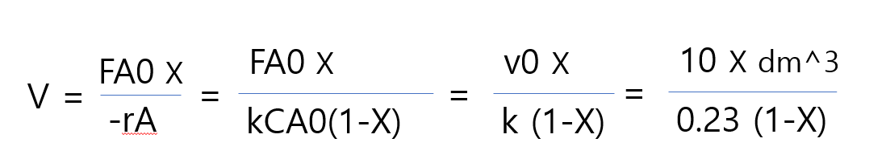
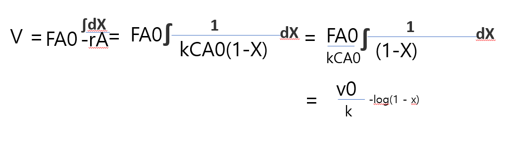
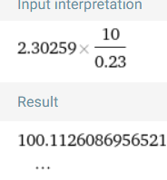
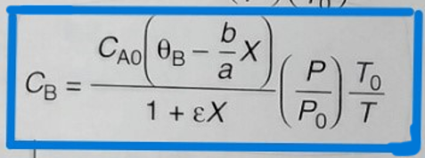

화학반응공학 몰수지 속도식 화학양론 결합문제
Q1) A->B이고 기초 액상반응이며 부피유량이 10dm^3/min이고 반응속도 상수는 0.23min-1 일때 출구농도가 입구농도의 10%가 되는데 필요한 CSTR. PFR 반응기의 부피를 구하여라.
SOLUTION)
먼저 CSTR에서 부피를 구하는 식을 만들기 위해 몰 수지, 속도식, 화학양론을 결합한다.
몰수지: V=FA0(X2-X1)/(-ra)
속도식: -ra=0.23/min * CA
화학양론:CA=CA0(1-X)
부피유량이 10dm^3/min 대입시

출구농도가 입구농도의 10%가 되었다는 말은 전화율이 90%라는 것과 같아.
X=0.9 대입시 391.3 dm^3이 답이 되지
이제 PFR을 알아보자
몰 수지, 속도식, 화학양론을 결합하면
몰수지:V=FA0∫dX/-ra from x in to x out
속도식: -ra=0.23/min * CA
화학양론:CA=CA0(1-X)

주어진 식 대입시

정답은 100.11dm^3이다.
Q2) 2A->B로 가는 반응기 부피의 변화가 없는 비가역 기초 반응이 회분식 반응기에서 수행될 때 A의 활성화 에너지가 20kcal/mol일 경우 초기조건 CA0 = CB0 = 1M , 77도, 200dm^3의 회분식 반응기에서 90%의 전화율을 얻는데 걸리는 시간을 구하여라. 단 25도에서 반응속도는 0.07mol/dm^3min이다.
핵심POINT) 반응기 부피의 변화가 없다는 것은 부피체적의 변화가 없다는 것이다.
CA=NA/V =NA0(1-X)/V인데 V=V0이므로 CA0(1-X)가 성립한다. 그러나 부피체적의 변화가 있는 기상반응의 경우에는 V=V0(1+ex)(p0/p)(T/T0) 이므로 CA =NA0(1-X)/V 에 대입하여 새로운 공식을 이끌어 내야 한다.

Q3)1차 가역반응 A<->B에 대하여 주어진 온도에서 평형전화율 Xe=0.6이다. 회분식 반응기 실험에서 10분 후 전환율은 XA=0.4가 나왔다고 했을 때, 반응속도식을 구하여라.